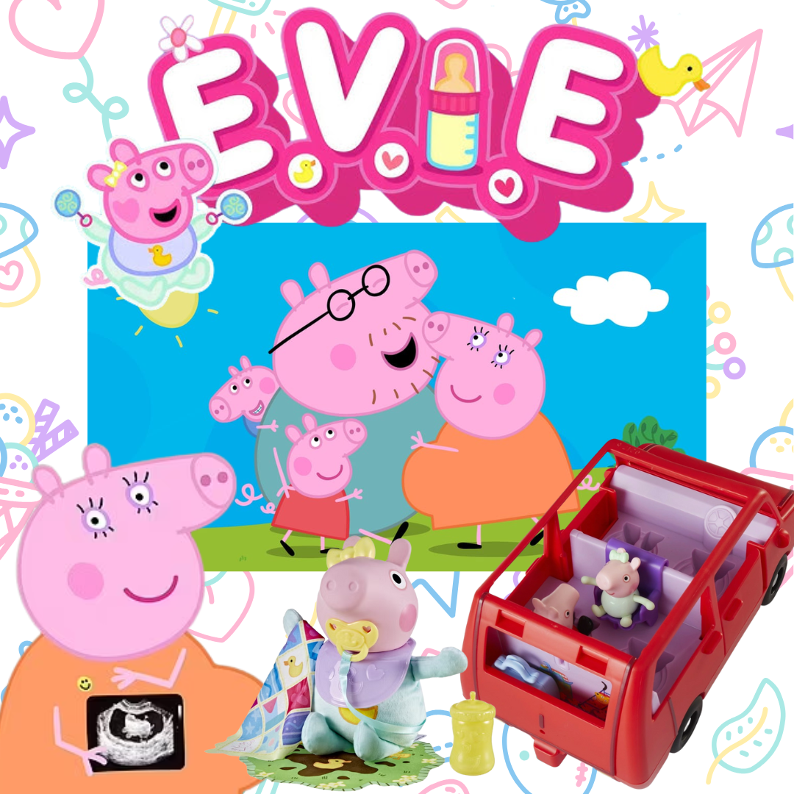

Baby Evie Pig and the Power of Brand Expansion
Lately, my 7-year-old has been deep in her baby era—dolls, bottles, strollers, the whole thing. So when she found out Peppa Pig was getting a baby sister, it was like Christmas morning. She’s been counting down the days until we go see the new movie in theaters. And suddenly… I’m seeing Baby Evie everywhere.
Maybe it’s just my mom algorithm working overtime. Or maybe—just maybe—this is marketing genius.
The Storytelling that Hooks Us
It all started with Mummy Pig’s surprise pregnancy—complete with red carpet moments and whispers of a new chapter. Then came the interviews, a gender reveal mini-episode, and finally, the highly anticipated arrival of Baby Evie Pig. It’s brand storytelling at its finest, crafted to capture hearts across generations.
Strategic Brand Expansion
This isn’t just a character launch; it’s a masterclass in brand expansion. Baby Evie seamlessly slots into the existing Peppa Pig universe, creating fresh emotional connections with the original audience—who are now young parents themselves. It’s nostalgia marketing meets next-gen engagement, bridging the gap between past and present with a brand extension that feels both new and familiar.
Emotional Resonance and Consumer Engagement
And the results? Emotional engagement at its peak. There’s the theater premiere, new episodes, and exclusive merchandise drops—like Walmart’s limited-edition Baby Evie line, already selling out on preorder. Baby Evie even has her own Instagram account, turning a character launch into a full-fledged social media presence that drives brand loyalty and community building.
Cross-Brand Collaborations & Co-Branding Magic
One of the most fascinating aspects of this campaign has been how other brands are jumping in to ride the wave of excitement. Jeep, for example, joined the conversation by telling Peppa she needed a new car—perfectly timed with Mummy Pig’s growing family storyline. It’s a brilliant example of cross-brand collaboration, where two seemingly unrelated brands tap into the same cultural moment to create a shared narrative that boosts visibility for both.
These co-branding opportunities showcase the real magic of brand expansion—how a fictional character’s journey can become a touchpoint for other businesses to engage new audiences and deepen their own brand relevance.
Leveraging Nostalgia and New Market Opportunities
This campaign is more than just product placement—it’s the perfect example of leveraging nostalgia to create new market opportunities. By speaking to millennial parents who grew up with Peppa Pig, the Peppa team has crafted a cross-generational connection that deepens the brand’s emotional equity. The Guardian is already calling Baby Evie the next billion-dollar brand, and it’s clear to see why.
My Takeaway as a Marketer
I don’t know what the budget was—but I know the ROI is pink, squeaky, and wearing a duck-print onesie. This campaign has all the hallmarks of a marketing triumph: strategic content releases, cross-platform storytelling, and an emotionally resonant brand voice that speaks to both kids and their parents. Add in the cross-brand partnerships like Jeep’s playful tie-in, and it’s clear this is more than just a cute storyline—it’s a case study in marketing brilliance.
Marketing brilliance, Peppa team. Pass the pacifier—I’m taking notes.